教机器学习表示
引
让机器来理解人类语言一直都是人工智能的梦想，从词、短语、句子、段落到文档，每个层次的文本都承载着语义，机器对各个层次文本的理解都需要先对文本进行表示，用机器看的明白的形式来表示。那么，今天就来分享一篇关于表示的综述文章。
问题描述
从人类理解文本的角度来看，理解一篇文档需要理解其中的每个段落，而理解段落需要理解每个段落的每句话，理解每句话就得理解每句话中的每个词。所以，表示一篇文档，需要从表示一个词、一句话开始。关于词的表示，在之前很长一段时间都流行的是one-hot模型，每一个词都用一个词表大小的向量表示，向量中该词所在的位置是1，其余都是0，而句子或者文档的表示，以前都是用bag-of-words模型，该文本用一个词表大小的向量表示，向量中的元素表示对应位置的词的个数。这两种经典的模型用了很久，有一些非常明显的缺点，比如：规模太大，太过稀疏，没有考虑词序信息，而词序又是一种非常有用的信息。
终于，在神经网络语言模型的帮助下，词向量（word embedding）出现了[1]，最初词向量是语言模型的一个副产物，后来随着word2vec的热潮，词向量几乎成了NLP中模型的标配，紧接着就是sentence2vec，document2vec，everything2vec，整个世界都被vector表示了。词向量与之前的one-hot模型不同，用了一些低维的、稠密的实数向量来表示，虽然说不清每个维度都表示什么，但用起来效果就是棒。
本文要探讨的问题是如何学习用低维的、稠密的实数向量来表示词、句子和文档。
语料
对于监督学习来说，需要找到一些分好类的语料进行训练，比如情感分析、新闻分类之类的数据。
对于无监督学习来说，只需要找到大量的文本进行训练即可。
模型
关于词、句子表示的模型实在是太多了，本文只选择PaperWeekly中读过的paper里的模型。
首先介绍的是词表示模型。
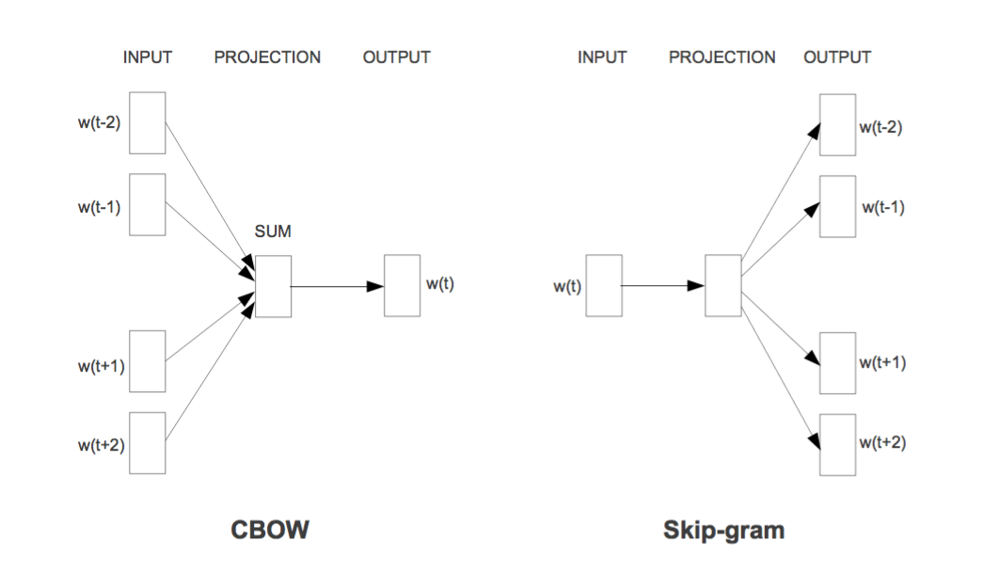
1、CBOW模型[2]
1、2都是word2vec的模型，整体的思路差不多，都是用context来预测word（skip-gram是用word来预测context，把context和word的概念对等交换一下都一样的。），典型的语言模型。之前Bengio[1]的文章提出用词向量来表示一个词，通过前面的n个词来预测下一个词，重点关注的是词的生成情况，并没有对词向量本身进行探讨。而word2vec的作者Tomas Mikolov重点研究的是词向量，并不在意语言模型的部分，所以这里在各种先前研究成果的基础上进行了大量地“偷工减料”，以达到快速求解词向量的目的。
如左图，该模型将每个词赋以一个n维向量初值，将context中的每个词向量求和来表示context，拿来预测目标词，不断地训练得到最终的词向量。
2、SKIP-GRAM模型[2]
如右图，该模型与CBOW类似，只是用word来预测context。
3、GloVe模型[3]
该模型的思路是将全局词-词共现矩阵进行分解，训练得到词向量。整体上的思路和推荐系统当年横扫Netflix百万美元比赛的LFM模型类似，也和信息检索中LSI的思路类似。不同的地方是，本文采用的词-词共现矩阵比起词-文档矩阵更加稠密，模型中对低频词和高频词的影响做了一定地弱化处理。模型的目标函数如下：
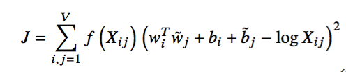
这里的f(x)是一个权重函数，具有以下的特点：
(a) f(0) = 0
(b) f(x)是增函数，这样低频词不会被over weight。
(c) 当x很大时，f(x)相对小一些，这样高频词也不会被over weight。
根据以上的特点，作者构造了下面的函数：
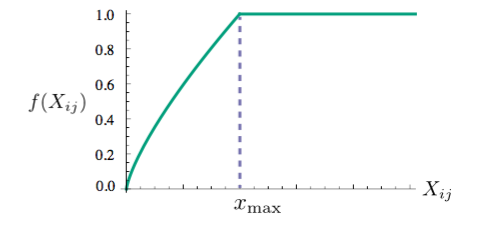
其次介绍的是句子表示模型。
1、PV-DM模型[4]
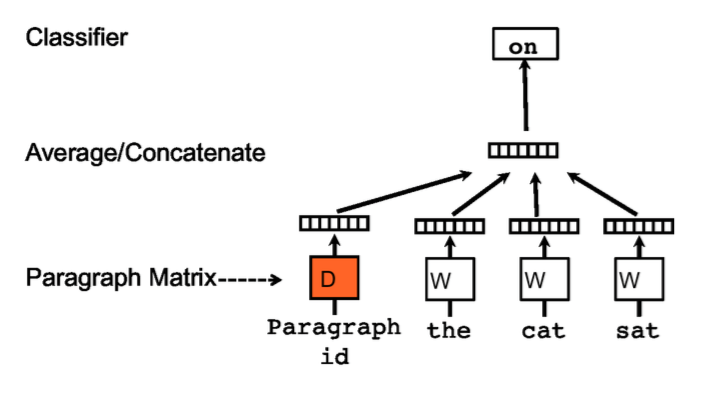
句子模型1和2是word2vec作者的进一步工作，乍一看模型和CBOW很像。不同的地方在于，输入中多了一个paragraph vector，可以看做是一个word vector，作用是用来记忆当前上下文所缺失的信息，或者说表征了该段落的主题。这里，所有的词向量在所有段落中都是共用的，而paragraph vector只在当前paragraph中做训练时才相同。后面的过程与word2vec无异。
2、PV-DBOW模型[4]
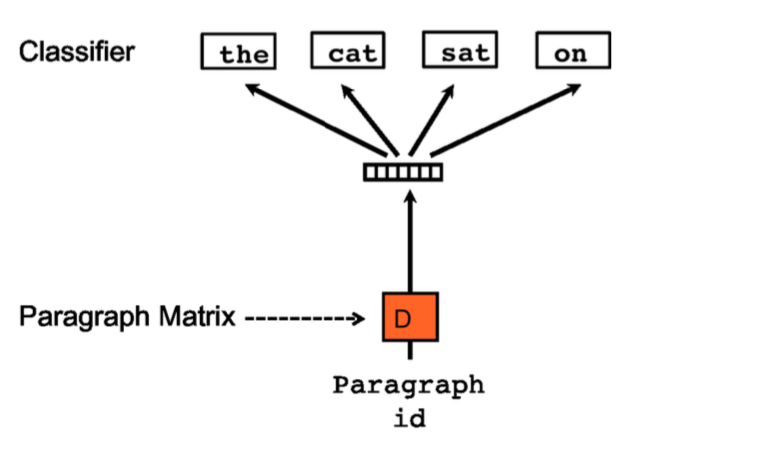
这个模型看着雨SKIP-GRAM很像。这两个模型都是无监督学习模型，在准备数据时需要给每个paragraph定义一个id，以区分不同的paragraph。
3、Skip Thought Vectors模型[5]
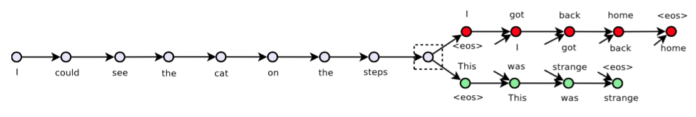
本模型是一个无监督句子表示模型，借鉴了word2vec中skip-gram模型，通过一句话来预测这句话的上一句和下一句。模型采用了当下流行的seq2seq框架，通过搜集了大量的小说作为训练数据集，将得到的模型中encoder部分作为feature extractor，可以给任意句子生成vector。
4、Sequence AutoEncoder LSTM模型[9]
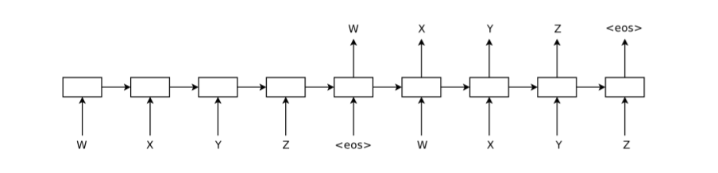
该模型利用自编码器来进行sentence表示，从图中可以看得出是一种端到端的学习，只不过这里的input和target是同一句话。模型中用LSTM来对文本进行建模，整个过程和之前分享的seq2seq并无区别，属于比较简单的模型。
5、Hierarchical Attention AutoEncoder模型[8]
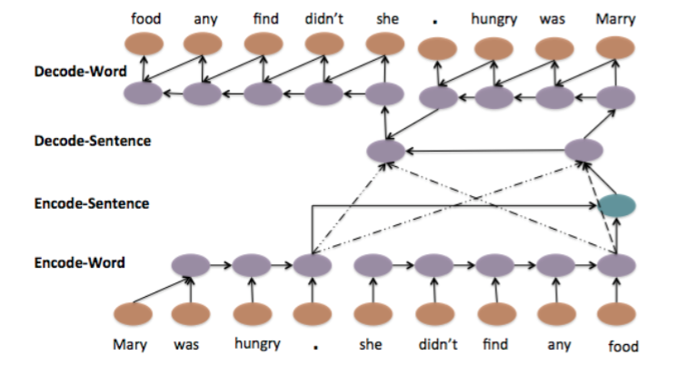
这个模型在模型4的基础上，用了分层和注意力的思想，更加复杂。在encoder部分，对每一个word进行表示，同时也对每一个sentence进行表示，用每句话最后一个词的state作为该句子的state，并且将每句话的表示综合起来作为整个输入的输出，也就是context。在decoder部分，生成词的时候会使用attention机制，在确定和input中哪句话的关系更加密切。
6、CNN模型[6]
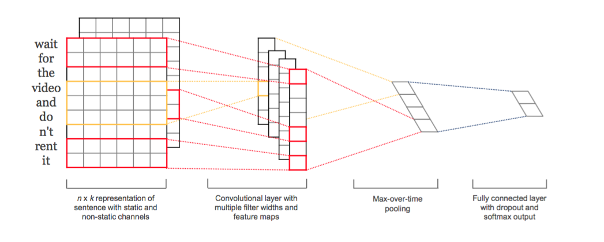
这个模型是CNN在NLP中得到应用的一个比较早的模型，也是一个有监督模型。用一个k维向量表示一个词之后，很容易将一句话表示成一个矩阵，矩阵中的每一行都是一个词向量。那么既然得到了矩阵表示，很容易套用CNN在二维图像中的处理方法，一层层地堆叠起来，得到sentence的表示。只是说卷积窗口的选择，有两种思路，一种是窗口大小就是k，每一次卷积其实就相当于从n-gram中提取feature；另外一种思路是窗口大小小于k，和CNN处理图像类似的思路，从几个词的不同部分来提取feature。本模型采用的是第一种方式。
7、RCNN模型[7]
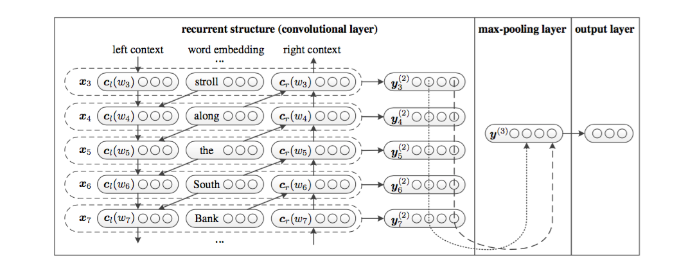
该模型是一个RNN和CNN的组合模型，CNN的卷积层用一个双向RNN模型来做，既用双向RNN弥补了CNN模型卷积窗口大小固定的问题，又利用了CNN提取feature的强大能力。这个模型也非常好地体现了deep learning模型的灵活性和组合性，不同类型的single模型通过一定的方式进行组合，可以衍生出多种多样的模型，很难从理论上讲哪个模型会更好，因为single模型都各有各的优点和缺点。该模型是一个有监督模型。
结果
本文只对比一下各个sentence表示模型的结果。
- Stanford Sentiment Treebank Dataset

在这个数据集上，居然是无监督的Paragraph Vector模型效果最好，虽然也好不到哪里去，但至少不比有监督学习的模型差。
多种分类数据集
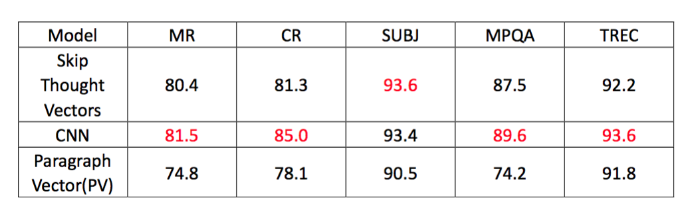
这里的评价指标是分类正确率，从结果上看CNN作为一个有监督学习的模型好于另外两个无监督的模型，仅仅在SUBJ这个数据集上稍落后于skip thought vectors模型。对比CNN和RCNN[7]
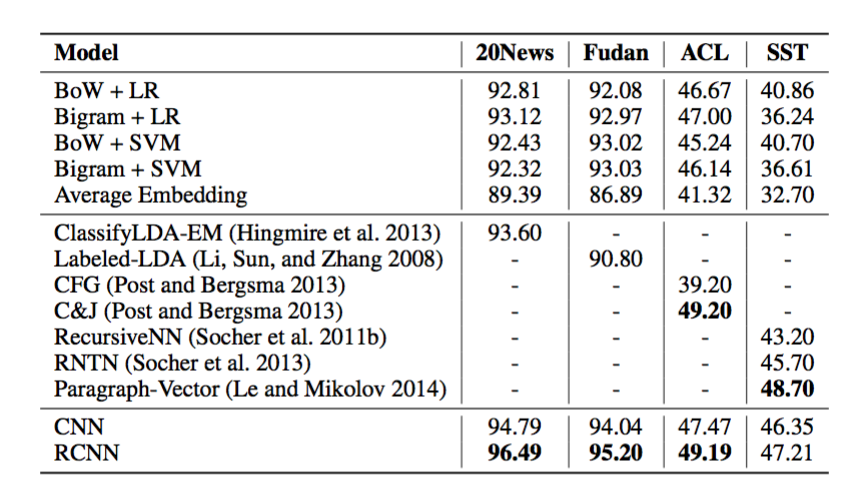
这个对比结果来自RCNN模型的paper，很显然RCNN在作者选的几个数据集上都由于CNN，可以大胆推测一下，RCNN应该在第二类数据集上也能优于无监督模型。
思考
词表示、句子表示等各种层次上的表示有着各种各样的模型，几乎在arxiv上每天都可以刷出一篇文章是做这方面的，都说自己的模型是state-of-the-art。对于这个领域，我有下面几点思考：
1、关于对比结果的事情。数据集的不同、数据规模的不同、模型的不同、模型超参数的不同都会导致不同的结果和结论，在对比的过程中，我们往往是用尽浑身解数调出最好的参数给出一个最好结果，而对于对比的模型，往往就没有这么上心了，复现别人的模型或者用别人开源的代码来对比的时候，可能很难调出该作者模型的最优参数，所以每篇paper的结果也总是有一些出入，从上面的结果中也能看得出，同一个数据集，在不同paper作者复现下结果也是不同的。而且，对比的结果与所选的数据集也有很大的关系，有的模型在某一些数据集上表现非常好，然而在另外一些上就不那么尽如人意了，这也是一个对比的技巧吧，但真正在工程应用上，还是需要在自己的数据上做对比实验，而不是用所谓的“理论”来剖析哪种模型更牛逼。因为毕竟deep learning是data driven的模型，效果的好坏与数据有着直接的关系。
2、读了一些paper之后，看过很多别人的思路和model，有一个感觉就是思维一定要更宽一些。单模型效果一般的时候，可以考虑试一下组合模型，比如RCNN，可以考虑下端到端模型，比如Autoencoder和skip thought vector，可以考虑下分层模型，比如Hierarchical Autoencoder。无监督模型效果一般的时候，可以考虑用无监督作初值，代入到有监督模型中进行训练，一般来说会比纯粹的有监督或者无监督模型效果更好一些。模型看多了，就会有一种感觉，做什么事情的时候，可选的东西就会特别多，思路就会特别多，所谓精神病人思路广吧。
3、词向量的用法，得到一个好的词表示之后，可以用来做什么呢？首先可以继续表示句子，段落，然后做分类也好，计算相似度也罢；其次，可能会有一些比较好玩的东西，比如我用word2vec给自己之前写的应用rsarxiv（一个arxiv paper的推荐系统）做了一个paper knowledge graph，把author，subject，keywords连成了一张大图，在推荐paper的同时可以推荐其他的一些metadata，带来了更好的用户体验。同样的道理，有的人用这个来做app推荐，也有不错的效果。所以，我在想，一个模型其实不仅仅是一个用于特定事情的模型，如果你有很强的抽象问题的能力，你可以看得穿问题的本质，就可以很容易地将特定领域的模型应用于其他领域，有可能还会形成突破。
参考文献
[1] A Neural Probabilistic Language Model
[2] Efficient Estimation of Word Representations in Vector Space
[3] GloVe: Global Vectors for Word Representation
[4] Distributed Representations of Sentences and Documents
[6] Convolutional Neural Networks for Sentence Classification
[7] Recurrent Convolutional Neural Networks for Text Classification
[8] A Hierarchical Neural Autoencoder for Paragraphs and Documents
[9] Semi-supervised Sequence Learning
如果大家觉得有写的不够清楚的地方或者错误的地方，欢迎留言交流。
工具推荐
PaperWeekly，每周会分享N篇nlp领域好玩的paper，旨在用最少的话说明白paper的贡献，欢迎大家扫码关注。

知乎专栏paperweekly